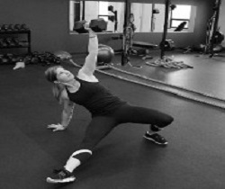

Mixed Martial Arts

Our MMA program consists of varying skill sets including boxing, Muay Thai, kickboxing, Brazilian Jiu Jitsu, and wrestling.
Read More
Yoga for Athletes

Personal Training

Working with one of CRTC’s certified personal trainers is one of the fastest, easiest, and most successful ways to improve your health and fitness.
Read MoreStrike-Fit

Combat Calesthen-x

CRTC Boot Camp is a comprehensive fitness program designed to maximize results in minimal time.
Read More